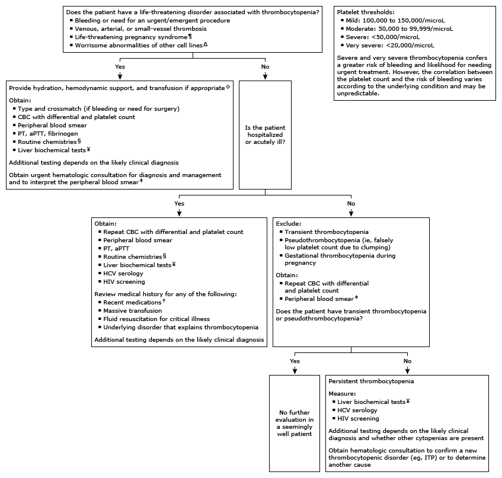

CBC: complete blood count; PT: prothrombin time; aPTT: activated thromboplastin time; HCV: hepatitis C virus; ITP: immune thrombocytopenia (idiopathic thrombocytopenic purpura); HELLP: hemolysis, elevated liver enzymes, low platelet count; ALT: alanine aminotransferase; AST: aspartate aminotransferase.
* The normal platelet count reference range is 150,000 to 450,000/microL but can vary depending on the patient population and clinical laboratory. Interpretation of a specific abnormal result should be based upon the reference range reported with that result.
¶ Life-threatening pregnancy syndrome includes disseminated intravascular coagulation, preeclampsia, and HELLP syndrome.
Δ Worrisome abnormalities of other cell lines include evidence of microangiopathic anemia (schistocytes), immature white blood cells such as blasts, and pancytopenia.
◊ Life-saving interventions should not be delayed while awaiting the results of diagnostic testing.
§ Routine chemistries include electrolytes, blood urea nitrogen, creatinine, and glucose.
¥ Liver biochemical tests include ALT, AST, and bilirubin.
‡ Review of the peripheral blood smear by an experienced individual may identify abnormalities not detected by automated machines.
† Many medications can cause drug-induced thrombocytopenia (eg, heparin, trimethoprim-sulfamethoxazole, vancomycin, quinine, and others).